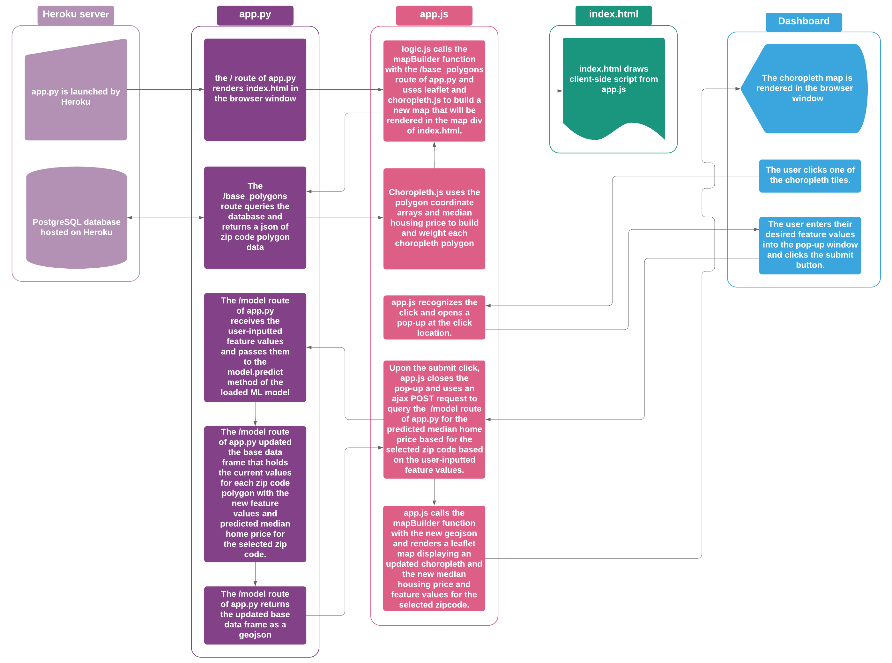
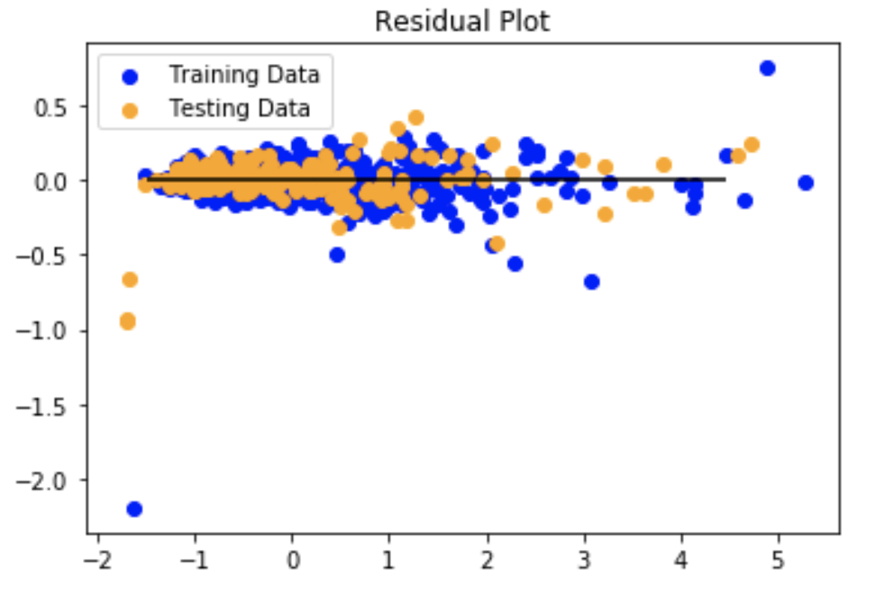
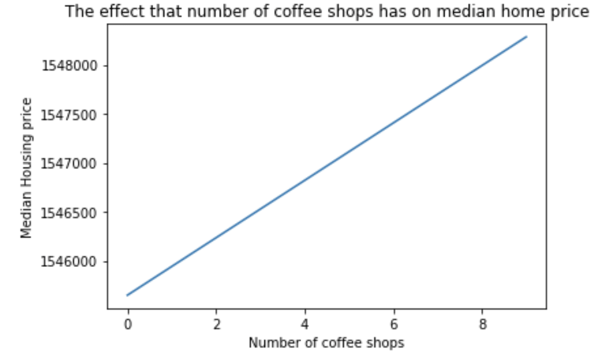
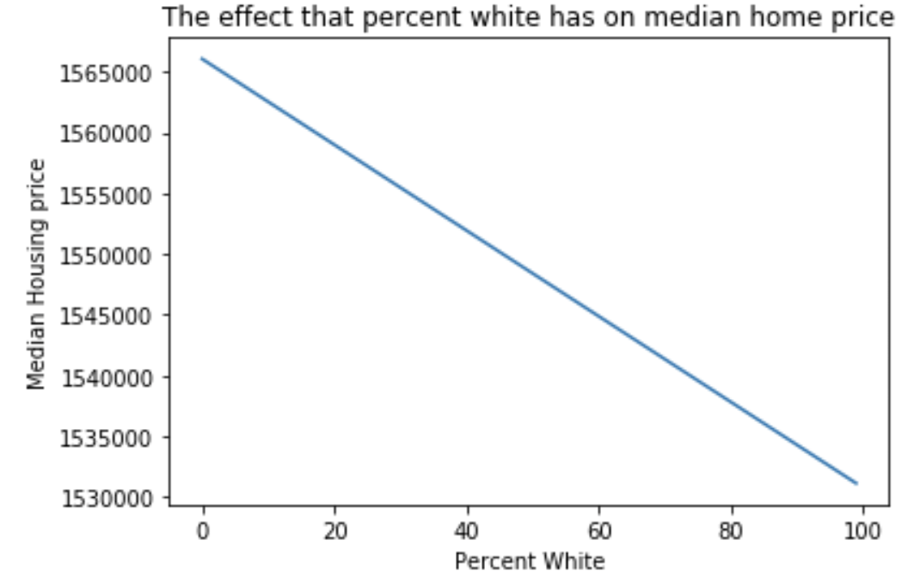
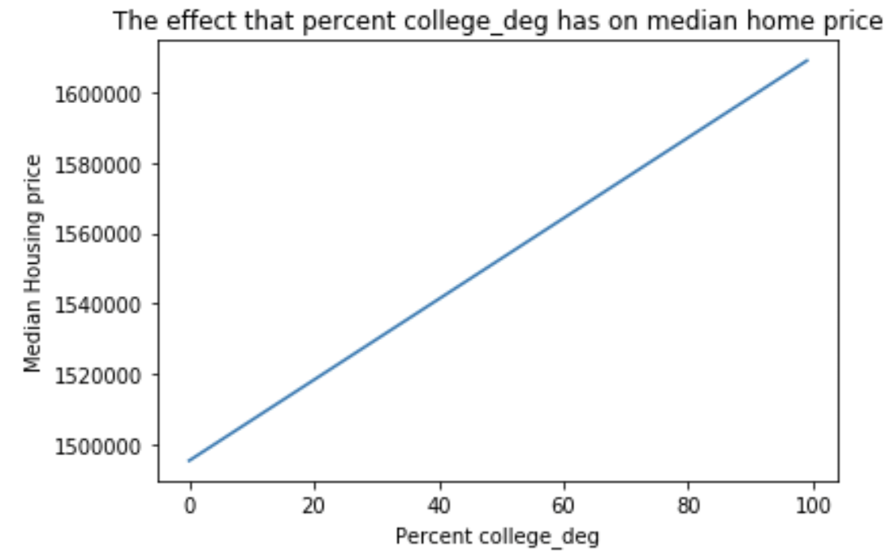
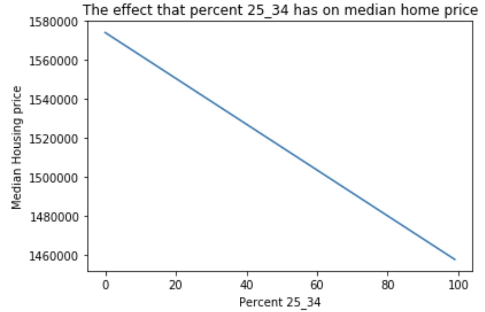

Flow Diagram

Data Collection
Coffee shops data (Zip Codes, Cities, Open Data), Housing Price and Demogrpahic data were collected for San Francisco, Seattle, and Los Angeles. Upon data clean-up, dataframes were exported to csv. Schema was creates in PostgreSQL and CSV data was imported into the databases.

Coffee Shops Data
- Use Socrata to query coffee shops data from:
Los Angeles Open Data
DataSF
Seattle Open Data - Responses dispay: Business Name, City, DBA_Name, Location (Latitude, Longitude) and Location Start Date
- Export dataframes to csv file
Demographic Data
- Query the ACS 5-year API for demographic data of 2011-2017 for all zip codes collected from Coffee Shop Dataframe
- Interested Parameters: Zipcode, Percentage 25-34, Percentage College Degree and Percentage White
- Export dataframe to csv file
Housing Data
- Export all housing price from USA by ZipCode from 1996 to 2019 from Zillow Housing Data
- Use Jupyter Notebook to query all housing price for the areas with zip codes collected from the Coffee Shop Dataframe
- Export dataframe to csv file
- Create schema in PostgreSQL database and import csv file into database
Model Development
- Import Demographic, Coffee Shops and Housing Price dataframe into Jupyter Notebook
- Counting the active coffee shop in each year for each zip code
- Join all dataframes by YEAR and ZIPCODE
- Final dataframe contains: Year, Zip Code, Percentage of White, Percentage of 25-34, Percentage of College Degree, Number of Active Coffee Shop, and Next Year Housing Price
- Use sklearn.linear_model to develop the model with:
Independent variables: Percentage of 25_34, Percentage with College Degree, Percentage of White, Current Year Housing Price and Number of Coffee Shop (950 rows from various Zip Codes and years)
Dependent variable: Next Year Housing Price - Model Score = 93.07%
- Use joblib.dump to save model
Data Preparation
Linear Regression

Effect that increases in each feature value has on median house price




Data Sources
- Los Angeles Open Data
- DataSF
- Seattle Open Data
- Zillow Housing Price
- US Censsus API
Tool Kits
- Leaflet, Choropleth, polygon.gemometry, geoJson
- Pandas, BeautifulSoup, json, requests, regular expression
- flask.py, sqlalchemy, dotenv
- aos.js, d3.js, ajax.js
- sklearn